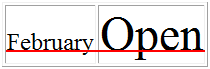

HTML <tr> 标签的 valign 属性
实例
带有不同垂直对齐行的表格：
<table width="100%" border="1"> <trvalign="middle"> <th>Month</th> <th>Savings</th> </tr> <trvalign="bottom"> <td>January</td> <td>$100</td> </tr> </table>
定义和用法
valign 属性规定表格行中内容的垂直对齐方式。
语法
<tr valign="value">
属性值
| 值 | 描述 |
|---|---|
| top | 对内容进行上对齐。 |
| middle | 对内容进行居中对齐（默认值）。 |
| bottom | 对内容进行下对齐。 |
| baseline | 与基线对齐。 |
baseline 值
基线是一条虚构的线。在一行文本中，大多数字母以基线为基准。baseline 值设置行中的所有表格数据都分享相同的基线。该值的效果常常与 bottom 值相同。不过，如果文本的字号各不相同，那么 baseline 的效果会更好。请看下面的图示：
 valign="bottom"
valign="bottom"
 valign="baseline"